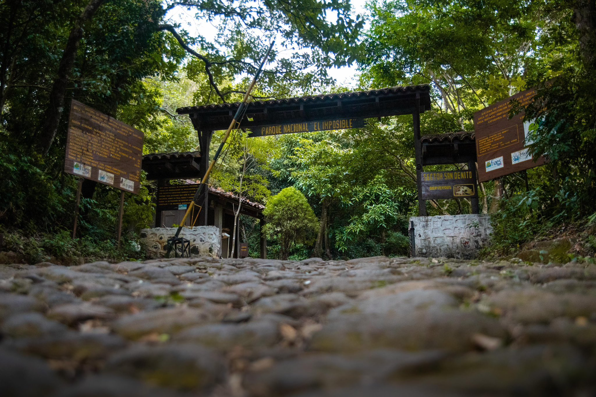
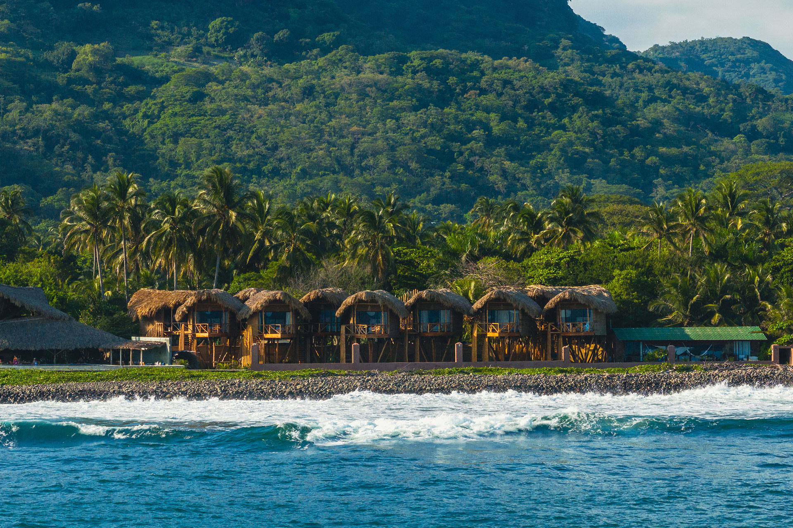

Lugares Para Visitar

Volcán de Santa Ana
El volcán más alto del país con una laguna verde hermosa
Senderismo
Fotografía
Observación volcánica
Naturaleza

Playa El Tunco
La playa más famosa para hacer surf y disfrutar
Surf
Playa
Vida nocturna
Buceo
Playas

Joya de Cerén
Ruinas antiguas muy importantes de nuestros antepasados
Tours guiados
Historia
Cultura maya
Cultura

Ruta de las Flores
Pueblos bonitos con flores y artesanías
Artesanías
Café
Paseo en carro
Arte local
Aventura

Lago de Coatepeque
Un lago muy bonito para nadar y relajarse
Natación
Lancha
Pesca
Relajación
Naturaleza

Centro de San Salvador
El corazón de la capital con muchos lugares históricos
Catedral
Teatro Nacional
Restaurantes
Compras
Cultura

Olocuilta
Famoso por sus deliciosas pupusas y ambiente tradicional salvadoreño
Pupusas de arroz
Gastronomía local
Ferias y festivales
Artesanías
Gastronomía

Parque Nacional El Imposible
El parque más grande con muchos animales y plantas
Observación de aves
Caminatas
Naturaleza
Fotografía
Naturaleza

Playa El Zonte
La playa del Bitcoin con olas perfectas para surf
Surf avanzado
Bitcoin
Atardeceres
Hospedaje
Playas